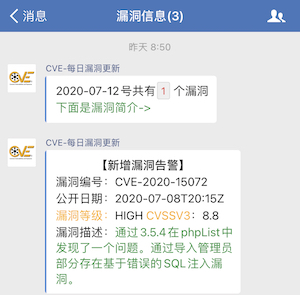

随着安全工作的开展，关注查看每天的CVE漏洞成了安全从业人员的日常事项，你可能从公众号、朋友圈或其它漏洞平台获取漏洞信息， 但这些都不可能完全满足你想要的信息，比如你只关心tomcat、zabbix、fastjson等组件的漏洞，所以我开始想如何自动化的推送漏洞信息
实现方法：
1、获取CVE数据：
可以爬取CVE官方网站每日公布的漏洞信息，但是当日漏洞没有漏洞定级和CVSS评分；而CVSS的评分需要NVD(美国国家漏洞数据库)，所以我这里直接选择使用NVD提供的api获取漏洞信息
2、漏洞信息过滤：
获取的漏洞信息可能多可能少，而我们只需要获得想要的信息便可，比如只想获取2020-07-08号的高危漏洞情况
3、消息推送：
通过企业微信的api进行消息的推送
4、定时推送：
放在服务器上建立定时任务，比如每天上班前8:50推送消息
1 | 50 08 * * * /usr/bin/python3 cve.py |
5、效果展示：

最后：
有些事情做起来没什么难度，但你的想法、思考很重要…获取源码方式，请公众号内回复’CVE’即可
参考链接：
https://nvd.nist.gov/General/News/New-NVD-CVE-CPE-API-and-SOAP-Retirement
https://work.weixin.qq.com/api/doc